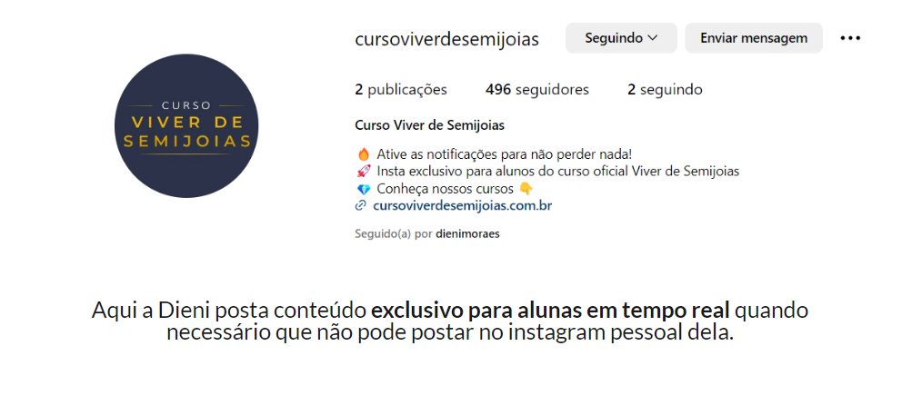
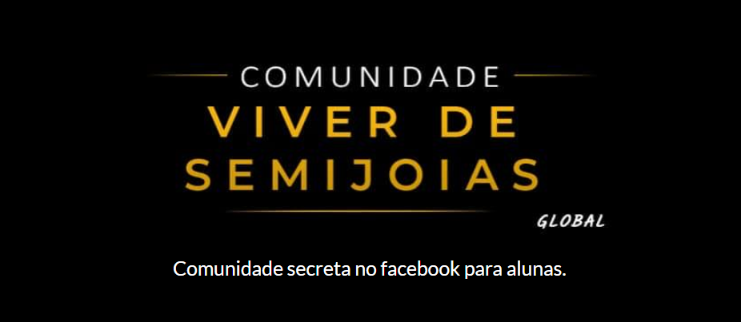
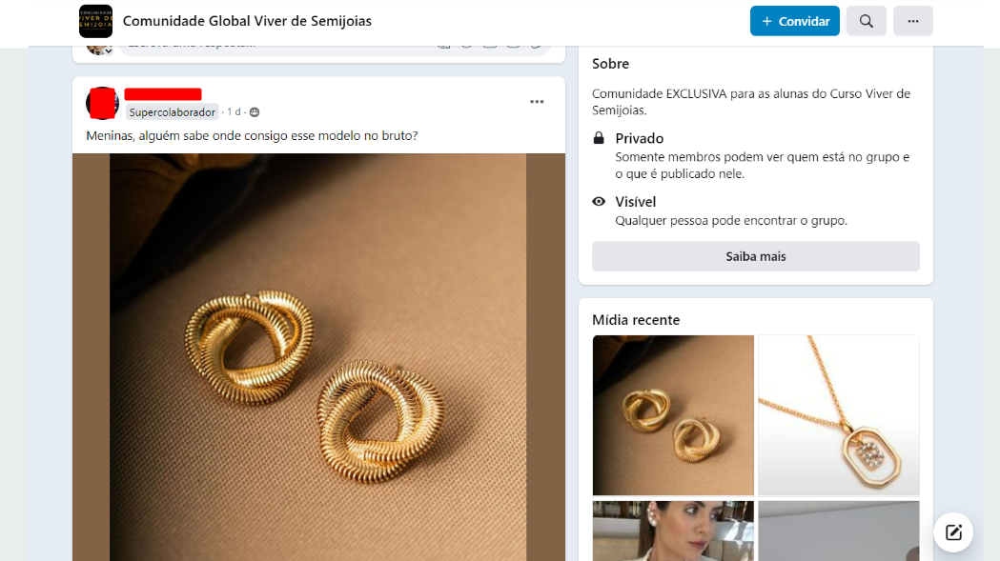
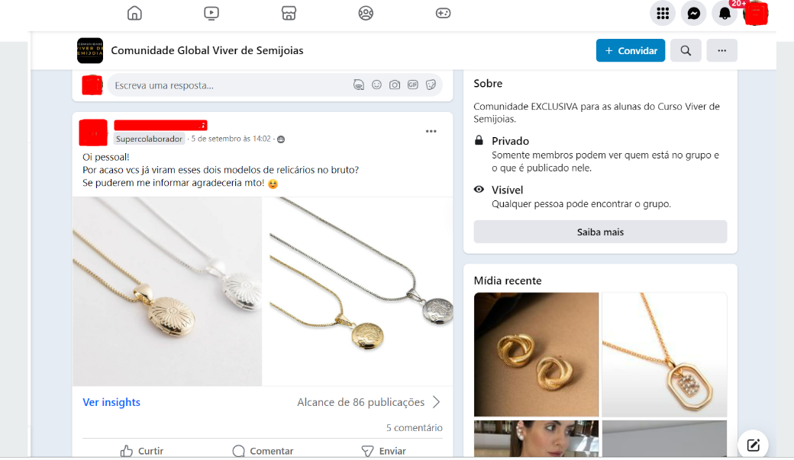

Resumo
Aprenda do básico ao avançado a trabalhar com semijoias, como ter margens acima de 1000% por peça. Saiba como trabalhar com consultoras, montar um e-commerce do zero, como usar o instagram e como vender nesses canais.
Para quem é o Curso Viver de Semijoias 2.0
- Se você não sabe nada de semijoias
- Se você ainda não consegue ter margens acima de 1000%
- Deseja aprender a trabalhar com consultoras
- Se deseja aprender a faturar acima de 10k com semijoias
- Deseja montar seu e-commerce de semijoias
- Quer montar seu instagram de semijoias
O que você vai aprender
Segue abaixo o que você vai aprender no curso Viver de Semijoias com a Dieni Moraes e Pedro Ferri.
- Módulo 02 - Eu, empreendedor(a)
- 2.1- Crenças limitantes
- 2.2 - Metas
- 2.3 - Procrastinação e Produtividade
- Módulo 03 - Iniciando no ramo de semijoias
- 3.1 - Conhecendo o mercado de semijoias
- 3.2 - O que é uma semijoia
- 3.3 - Diferença de joia, semijoia e bijuteria
- 3.4 - Pedras e pérolas
- 3.5 - O que são milésimos
- 3.6 - Banhado ou folheado
- 3.7 - Tipos de banho
- 3.8 - Estilos de peças
- 3.9 - Diferença de Prata 925 e 950
- Módulo 04 - Como a Semijoia é fabricada
- 4.1 - Porque eu preciso saber como a semijoia é fabricada
- 4.2 - Processo produtivo da semijoia até o bruto
- 4.3 - Processo produtivo da semijoia - Galvânica e Finalização
- Módulo 05 - Acessórios para iniciar
- 5.1 - Escolha da maleta, pasta ou bolsa
- 5.2 - Itens necessários para iniciar
- 5.3 Itens personalizados - Parte 1
- 5.3 Itens personalizados - Parte 2
- 5.4 - Organizando a bolsa
- Módulo 06 - Organizando a minha marca
- 6.1 - Formalizando a minha empresa
- 6.2 - Persona
- 6.3 - Identidade Visual
- 6.4 - Posicionamento de mercado
- 6.5 - Propósito de marca
- Módulo 07 - Como fazer a gestão da minha empresa
- 7.1 - Importância da gestão do negócio
- 7.2 - Ferramentas do Google
- 7.3 - Controle em planilhas
- 7.4 - Usando sistemas
- 7.5 - Como precificar
- Módulo 08 - Onde comprar semijoias
- 8.1 - O que é importante você saber
- 8.2 - Polos de semijoias no Brasil
- Módulo 09 - Onde comprar semijoias banhadas
- 9.1 - Consignado
- 9.2 - Comprando de distribuidores de peças banhadas
- 9.3 - Comprando de fábrica peças banhadas
- 9.4 - Recebi as peças, e agora?
- 9.5 - Sobre a garantia
- Módulo 10 - Onde comprar peças em bruto
- 10.1 - O que é uma peça em bruto
- 10.2 - O que preciso saber para entrar nesse mercado
- 10.3 - Como comprar e evitar problemas
- 10.4 - Como calcular o banho
- 10.5 - Analisando o seu markup
- 10.6 - Organizando o meu pedido
- 10.7 - Como banhar as peças
- 10.8 - Recebi as peças, e agora?
- 10.9 - Sobre a garantia
- 10.10 - Fornecedores, como encontrar?
- 10.11 - Vendendo no atacado
- Módulo 11 - Método 10k+ - Nosso método que nos fez ter mais de 350 consultoras em nossa marca de semijoias
- 11.1 - Introdução
- 11.2 - Matriz BCG
- 11.3 - Estratégia para iniciantes
- 11.4 - Migrando para o bruto
- 11.5 - Criando coleções
- 11.6 - Introdução revendedoras
- 11.7 - Como funciona a captação
- 11.8 - Registrando o seu domínio
- 11.9 - O que é Landing Page
- 11.10 - Vídeo de captura
- 11.11 - Vídeo de vendas
- 11.12 - Criando o seu formulário
- 11.13.1 - Porque usar o klickpages para landing pages
- 11.13.2 - Configurando o domínio no klickpages
- 11.13.3 - Configurando o SSL no klickpages
- 11.13.4 - Criando a sua Landing Page
- 11.14 - O que é tráfego?
- 11.15 - Criando sua conta na BM
- 11.16 - Criando e configurando o Google Analytics
- 11.17 - Criando e configurando o pixel do facebook
- 11.18 - Criando seus públicos no facebook
- 11.19 - Criando conversões personalizadas no facebook
- 11.20 - Criando campanhas de captura de revendedora
- 11.21 - Estratégia de comissão e metas
- 11.22 - Desafios internos + premiação trimestral
- 11.23 - Reuniões de acompanhamento
- 11.24 - Selecionando revendedora
- 11.25 - Entrevistas passo a passo
- 11.26 - Contrato
- 11.27 - Montagem do kit
- 11.28 - Padrão de atendimento
- 11.29 - Entrega e recebimento do kit da revendedora
- Módulo 12 - Marketing
- 12.1 - Introdução
- 12.2 - Persona, público alvo e nicho
- 12.3 - O que é funil de venda e níveis de consciência do consumidor
- 12.4 - Marketing olfativo
- 12.5 - Marketing de Relacionamento
- Módulo 13 - Estratégias de vendas
- 13.1 - Introdução
- 13.2 - Gatilhos mentais
- 13.3 - Tipos de cliente
- 13.4 -Seja a vitrine do seu negócio
- 13.5 - Pitch de Vendas
- 13.6 - Seja uma boa ouvinte
- 13.7 - Venda consultiva
- 13.8 - Montando kits de presente
- 13.9 - Upsell
- 13.10 - Downsell
- 13.11 - O poder da ancoragem
- 13.12 - Contornar objeções
- 13.13 - Campanha (Promoção x Desconto)
- 13.14 - Follow up
- 13.15 - O poder da indicação
- Módulo 14 - Como usar o WhatsApp para vender
- 14.1 - Introdução
- 14.2 - Whatsapp business x pessoal
- 14.3 - Organização do perfil
- 14.4 - Mensagens automáticas
- 14.5 - Lista de transmissão e grupos
- 14.6 - O que enviar para a lista
- 14.7 - Salvando os contatos
- 14.8 - Status do whatsapp
- 14.9 - Link do whatsapp
- 14.10 - Captação de contatos
- 14.11 - Campanha com gatilhos mentais
- 14.12 - Turbinando a campanha de gatilhos mentais com anúncios
- Módulo 15 - Como usar o Instagram para vender
- 15.1 - Introdução
- 15.2 - Linha editorial
- 15.3 - Foto de perfil
- 15.4 - Biografia que vende
- 15.5 - Criando um Feed poderoso
- 15.6 - Fotos que vendem
- 15.7 - Story
- 15.8 - Direct
- 15.9 - Lives
- 15.10 - Estratégia de crescimento orgânico
- 15.11 - Seguidores engajados
- 15.12 - Parceria com influenciadoras
- 15.13 - Studio de criação
- 15.14 - Sacolinha
- Módulo 16 - Criar seu o meu e-commerce do zero
- 16.1 - Introdução
- 16.2 - Como a loja virtual é dividida
- 16.3 - Criando minha loja virtual gratuitamente
- 16.4 - Configurando o seu domínio
- 16.5 - Criando o seu e-mail contato@suamarca.com.br
- 16.6 - Configurando meios de pagamento
- 16.7 - Configurando formas de envio
- 16.8 - Configurando pixel e google analytics
- 16.9 - Integração com ERP
- 16.10 - O que é SEO e como cadastrar o seu produto
- 16.11 - Como deixar mais profissional o meu e-commerce
- 16.12 - Integrando e-commerce e instagram e ativando a sacolinha
- 16.13 - Testando o fluxo de compras completo
- Módulo 17 - Criando anúncios para o e-commerce
- 17.1 - Porque devo fazer anúncios para o meu e-commerce
- 17.2 - Porque devo fazer anúncios para o meu instagram
- 17.3 - Anunciando no FB e IG
- 17.4 - Anúncio para atrair seguidores no Instagram
- 17.5 - Quando contratar um gestor de tráfego
Suporte
- Dentro da plataforma do curso, abaixo de cada aula você poderá postar sua dúvida que será respondida por nossa equipe.
- Aulas de tira dúvidas ao vivo a cada 15 dias com a Dieni e o Pedro

Bônus
- 1 - Lista de Fornecedores - (Gráficas e insumos, presentes, sistemas, Semijoias direto de fábrica, Peças em Bruto e Galvânicas);
- 2 - Treinamento básico para suas revendedoras em PDF;
- 3 - PDF com mais de 100 temas para conteúdo de valor;
- 4 - Modelo de contrato para revendedoras (Contrato vale mais de R$ 3 mil reais);
Além do curso, você terá acesso:
- 
- 

- 
- 